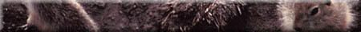

|
|  |
| Healthy ecosystems undergo a series of events which enable the system to
survive. Substances are replaced, replenished and renewed on a constant basis.
Without such a "recycling" program, the ecosystem would no longer be able to
sustain itself. Substances that are removed from the soil and the atmosphere
to be incorporated into the bodies of living organisms are eventually
returned to the earth and atmosphere in alternate forms like wastes, or
decomposing matter. The interactions of the soil fauna and flora are intimately associated
in a complex food chain or web. Energy and food is cycled through the soil system
by the interactions of producers, predators and consumers.
Plants are the key to entire web and are called the primary producers since they convert atmospheric carbon dioxide into sugars using sunlight as the energy source. Plant eaters are called primary consumers. Predators of plant eaters are called secondary consumers and tertiary consumers eat secondary consumers. |
|
The Web Let us consider what happens when a plant leaf falls to the soil. It is soon attacked by the fauna and microflora, Fungal hyphae emerge from the soil and begin to invade the leaf cells. Mice, ants, worms, beetles and woodlice tear up the leaf into smaller fragments making it easier for the microflora to attack. These organisms that use the energy stored in plants are called the primary consumers. The energy stored in the bodies of the primary consumers now become available for predators and parasites or the secondary consumers. A large part of the microflora including fungi, bacteria and algae are secondary consumers. Collembola, nematodes and protozoa in turn eat these microorganisms often termed microbial grazing. Animal carnivores such as centipedes also eat the primary animal consumers such as mites, spiders, snails and small insects. Further up the food chain the secondary consumers are also eaten. For example, our greedy centipede could be eaten by a soil animal. Within any one group of fauna or flora we will find primary secondary and tertiary consumers. For example, some nematodes eat fungi and some fungi eat nematodes. Some mites directly eat plant residues others eat the fungi that feed on these residues. What is the overall driving force of the web - the energy in sunlight.
| |
|
|